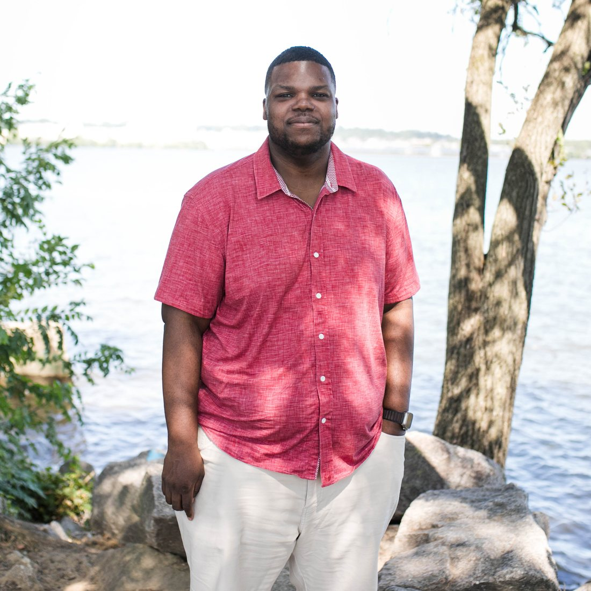

Most of the field learns to secure the app, the data, and the endpoint, then picks up operational technology later as a specialty. I started on the other end, where a mistake was measured in people, not records.

I learned security on a particle accelerator. I was 17, a junior in high school, and I had just been accepted into an internship at a national physics lab. I assumed they would pair me with a physicist. I wanted to be an astrophysicist back then. Instead they sat me next to the head of network engineering. There was no separate security job in those days. If you ran the network for the accelerators, you secured them too.
I was not an obvious pick. We did not have much money growing up, so the way I taught myself computers was by pulling broken laptops out of the trash and taking them apart to see how they worked. That was the whole résumé I walked in with.
What I did not grasp at 17 was what was on the line. Some of the research on those networks was sensitive or restricted, the kind of work where a weak network does not cost you downtime, it costs you someone quietly walking out with findings that were never meant to leave the building. And the accelerators were not only research machines. The same family of technology was moving into hospitals to treat cancer. On a system like that, a bad actor, or even a bad configuration, does not cause a data breach. It can push the wrong settings to a machine pointed at a patient. The failure there is not a leaked file. It is a person.
My mentor told me something that summer I did not understand yet: that security and networking would be the most important infrastructure of my generation, and that if he taught me well, I would know enough one day to go build something of my own. Then he taught me on systems where getting it wrong had consequences you measured in people.
I did not realize how unusual that start was until years later. It is why I still believe the most important security decisions get made before anyone writes a line of code, while the business is still deciding what to build. By the time we show up to review the roadmap, the costly mistakes are already in it.
Everything I have built since traces back to that summer. I founded a security practice and grew it past $5M before it was acquired. I was the first security hire who built a global organization through a $1B acquisition under regulatory scrutiny. I led security across 300+ healthcare sites and built the risk framework for pharmacy fulfillment robotics. I taught thousands of students, from age 8 to 90, how to design and build real things. And I co-founded a venture applying the same conviction to a factory floor.
What I am known for is holding the whole picture at once: the science, the operations, the technology, the security, and the business case. If you came into this field sideways too, from somewhere the failure was physical and not just digital, I would bet you see security differently for it.
Security, safety, and resilience belong in the decision, not the retrofit. The cheapest fix is the one made before the build.
Boards and regulators do not need another vendor pitch. They need someone who can back every claim with evidence.
Whether it is a student who never saw the inside of a museum or a team learning to own security, the work is making hard things reachable.